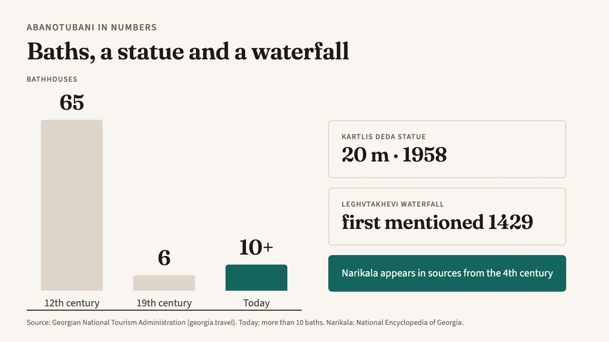
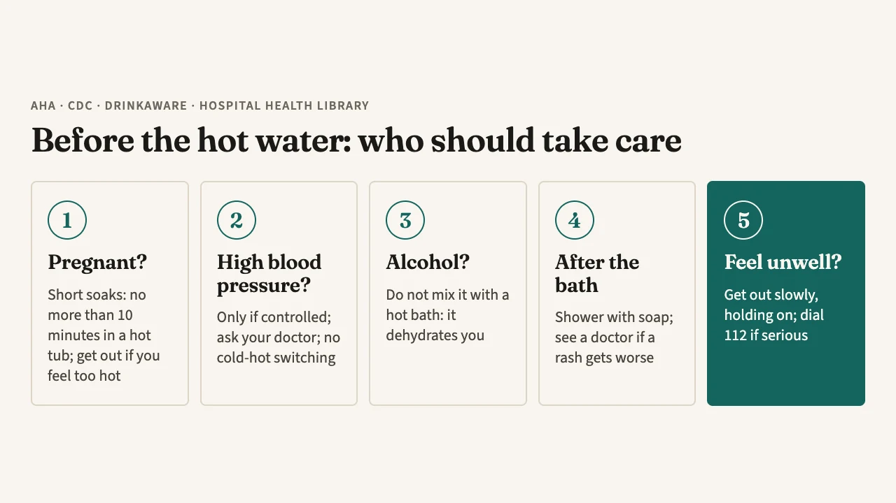
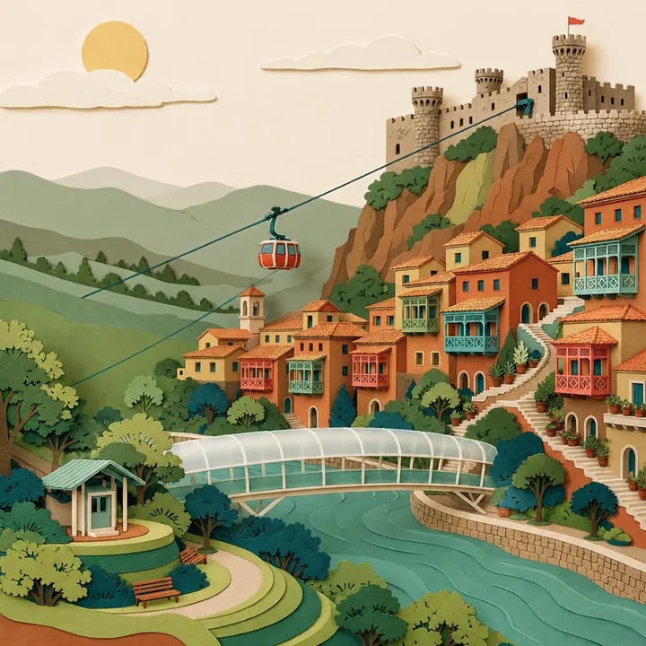
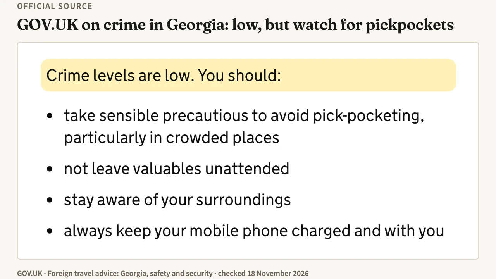

- Baths in the 12th century
- 65
- In the 19th century
- 6
- Today
- more than 10
- Kartlis Deda
- 20 m
This page is about Georgia the country, not the US state, and is part of our guide to healthcare in Georgia. Checked on 18 November 2026.
Abanotubani: the bath district
The name means "the bath district". In Georgian, "abano" means "bath" and "ubani" means "district", explains Georgia's national tourism administration.
The district grew up around natural hot springs in the old town, below the fortress hill. It is a compact area, easy to explore on foot together with the fortress and the waterfall.
The legend. The springs are tied to the founding story of the city. In the version told on georgia.travel, King Vakhtang Gorgasali was out hunting: "The king's sparrowhawk got lost while chasing a wounded pheasant, and both birds were found later in a boiling spring".
Other versions on the same site call the bird a falcon, so we simply say a hunting bird. The story goes that the king decided to build a city by the warm water. The word "tbili" means hot or warm, and that is where the name Tbilisi is said to come from. Treat it as a legend, not as history.
Famous visitors. The baths have welcomed travellers for centuries. The tourism administration's page recalls the French writer Alexandre Dumas and his visit in 1858.
How many baths are there? Fewer than there used to be. The same page says: "There were 65 baths in the 12th century, which decreased to six in the 19th century. Today there are more than 10 baths."
Other guides give other numbers. We use the official ones above.
Next door. The page also points out the Juma Mosque, "the only Muslim shrine in Tbilisi, built in the 18th century". It makes the short walk through the district worth doing even if you do not bathe.

Chreli Abano: the Colorful Bath
It is the best-known bathhouse in the district, thanks to its tiled front. The tourism administration calls it "the 17th-century Orbeliani Bath, better known as the Colorful Bath (Chreli Abano) because of the colorful facade covered with ceramic tiles" (georgia.travel).
"Chreli" means colourful. The building is easy to spot, and the tiled facade is worth a look from the street whichever bathhouse you choose.
Public halls and private rooms
Each bathhouse is a private business with its own rules. The format, the hours and the prices all vary from one to the next.
The tourism administration gives one clear tip: "Always check the operating hours of the bathhouses in advance - their schedules differ" (georgia.travel). We found no official, up-to-date list of prices or opening times, so we do not give any.
Before you book, ask the bathhouse a few simple questions:
- Is there a shared hall, private rooms, or both? Which one suits you?
- How long does a booking last?
- Are towels, sheets and slippers included, or extra?
- Are any extra services offered, and what do they cost?
- Can you leave valuables somewhere safe?
A short list of things to bring helps too: flip-flops, a bottle of water and a change of clothes. If you are travelling with someone who has a health condition, read the next section before you book.

Are sulfur baths safe? Who should take care
Hot water is not right for everyone. Pregnant women, people with high blood pressure or heart problems, and anyone who has been drinking alcohol should take extra care. Below is what health sources say, in plain words.
What people believe about the water. You will often hear that a sulfur bath is good for you. The tourism administration puts it this way: "Bathing in sulfur water is believed to improve skin conditions, ease joint pain, and boost blood circulation" (georgia.travel).
Note the word "believed". This is a tourism site, not a medical one, and we found no medical source that confirms these benefits. Go for the experience and the history, not as a medical treatment.
High blood pressure and the heart. The American Heart Association writes about saunas and hot tubs, not about Georgian baths. But a hot sulfur bath is hot water too, so its advice is a good guide:
- "People with high blood pressure should be able to tolerate saunas if their blood pressure is under control."
- "People with high blood pressure should not move back and forth between cold water and hot tubs or saunas. This could cause an increase in blood pressure." So skip the cold plunge between hot soaks.
- If your doctor has told you to avoid moderate exercise, the AHA says you "should be careful using hot tubs and saunas".
- If you have any doubts, "ask your healthcare professional for advice".
If you have a heart condition, talk to your doctor before the trip, not after you arrive.
Pregnancy. Hot water raises your body temperature, and that matters for the baby. The health library of the Children's Hospital at Montefiore says: "Using a hot tub or sauna can raise your core body temperature… It can harm the fetus."
It does not ban bathing outright: "Experts don't forbid hot tub or sauna use. But if you use a hot tub or sauna, you do need to be careful." Its two simple rules:
- "Do not stay in a hot tub for more than 10 minutes."
- "Get out if you feel too hot."
Ask your doctor or midwife before the trip whether a hot bath is right for you.
Alcohol and hot water. Do not mix them. The AHA is direct: "Drinking alcohol and using a sauna isn't a good combination. Don't mix the two."
The UK charity Drinkaware explains the reason in hot weather: "Alcohol dehydrates you", and in the heat "adding alcohol to the mix increases your risk of dehydration, heat exhaustion, or heat stroke". Drinkaware writes about heatwaves, not baths; we apply the same logic to hot water. Save the wine for dinner after the bath.
Hygiene. The US Centers for Disease Control and Prevention (CDC) gives advice on hot tubs. Its pages are about hot tubs, not about the Tbilisi baths, and we found no data specific to these baths. The basic precautions still make sense.
- To avoid a skin rash, the CDC on hot tub rash says: "Remove your swimsuit and shower with soap after getting out of the water, especially hot tubs." It adds: "Check with your healthcare provider if a rash gets worse."
- The CDC page on Legionella says Legionnaires' disease, a lung infection, is more likely in people aged 50 or older, current or former smokers, and people with chronic lung disease or a weakened immune system. If you get a cough, fever or shortness of breath within two weeks of a hot bath, see a doctor and tell them about the bath.
If a rash appears in Tbilisi and gets worse, you can find dermatologists in Tbilisi on 100doc.ge and contact a clinic.

After the bath
Shower, drink water and rest for a while. Hot water can leave you tired and thirsty, even if it feels relaxing at the time.
- Shower with soap and change out of your wet swimwear.
- Drink water, not alcohol.
- Do not head straight up the steep hill in the midday heat. Sit down in the shade first.
- Over the next few days, watch your skin. A rash that gets worse needs a doctor.
- Over the next two weeks, a cough, fever or shortness of breath also needs a doctor. Mention the bath.
If you feel unwell in the water. Get out slowly, holding on to something, and tell the staff. If it feels serious, for example chest pain or fainting, dial 112 for an ambulance.
Narikala Fortress above the baths
The old fortress walls run along the ridge right above the bath district. It appears in written records from the 4th century on, and the view over the old town is a good reason to climb up.
The National Encyclopedia of Georgia says that "Between the 4th–18th centuries, it appears in Georgian and foreign historical sources under the names Kala, Shuristsikhe…". The name we use today came later: "The term "Narikala" first appears in 17th-century records".
Getting up. You have two options: walk up from the baths, or take the cable car from Rike Park (see below). The walk is uphill all the way, so wear comfortable shoes with grip.
A simple half-day plan. Start at the baths and look at the tiled front of Chreli Abano. Walk to the end of Abano Street and on towards the waterfall, if the path is open. Then climb up to the fortress and the statue on Sololaki Hill, and take the cable car down. Leave the bath itself for the end of the day, so you do not climb in the heat straight after hot water.
Is it open? Access to the fortress can change. Ask locally whether the upper walls are open before you plan your visit, for example at your hotel or at the cable car station.

Kartlis Deda, the Mother of Georgia
High above the old town, on Sololaki Hill, stands the statue known as Kartlis Deda, or the Mother of Georgia. The tourism administration describes it as "a monumental 20-meter aluminum statue overlooking the city from the top of Sololaki Hill" (georgia.travel).
It "was designed by … Elguja Amashukeli and was erected in 1958 to commemorate the 1500th anniversary of the founding of Tbilisi". The statue you see today is not the first one: "the old statue was replaced with an identical new one in 1997".
The cable car
It is the easy way up. "The cable car connects Rike Park to the ancient fortress of Narikala", says the tourism administration, and the line is 500 m long.
That page gives no fares or opening times, so we give none either. Check at the station on the day. Coming back, you can ride down again or walk down to the baths.
Leghvtakhevi waterfall
From the baths, a path leads on to a waterfall. The tourism administration describes the route: "Starting from the end of Abano Street in the Abanotubani district, it leads to a beautiful waterfall - Leghvtakhevi - first mentioned in historical sources in 1429. It is located downhill from Narikala Fortress" (georgia.travel).
The area was tidied up in 2012: "in 2012, Leghvtakhevi underwent a makeover", the same page says.
Is it open now? We cannot say for sure. Local media reported that, while rockfall prevention work was under way, tourist movement in the area was restricted "until the risk of rockfall and rock avalanche processes is eliminated". We found no update on whether the restriction has been lifted. Check locally, and obey any signs or fences.
Staying safe in Old Tbilisi
Crime is low, but keep an eye on your things in crowds. UK government travel advice says: "Crime levels are low. You should: take sensible precautious to avoid pick-pocketing, particularly in crowded places" (the spelling is the source's).
That fits the bath district well: its streets and viewpoints get busy, and you leave your things behind while you bathe.

Emergencies. Dial 112 for an ambulance, the police or the fire service (GOV.UK, getting help). Here is how to call an ambulance on 112 and what to say when you get through.
Summer heat. Summer days can be hot, and a hot bath followed by a climb in the sun adds up. Carry water, take breaks in the shade and go up the hill in the morning or evening if you can. Remember Drinkaware's warning above: alcohol in the heat raises the risk of dehydration and heat exhaustion.
Insurance. Georgia requires visitors to have travel insurance to enter: see the 2026 entry insurance rule.
Frequently asked questions
Are Tbilisi sulfur baths safe?
Hot water is not right for everyone. Take extra care if you are pregnant, have high blood pressure or a heart condition, or have been drinking. Shower with soap afterwards.
Can I go to a sulfur bath when pregnant?
Ask your doctor first. A US children's hospital health library advises staying in a hot tub for no more than 10 minutes and getting out if you feel too hot, because heat can harm the fetus.
Is a sulfur bath OK with high blood pressure?
Only if it is under control. The American Heart Association, writing about saunas rather than baths, says people whose blood pressure is under control should be able to tolerate them. If it is not controlled, or you have a heart condition, ask your doctor before bathing. Do not switch between cold and hot water.
Should I drink alcohol in the bath?
No. The American Heart Association says alcohol and a sauna are not a good combination: "Don't mix the two." Alcohol also dehydrates you in the heat. Drink water in the bath and keep the wine for later.
How do I get to Narikala Fortress?
Walk up from the baths, or take the cable car from Rike Park. The walk is steep, so allow time and wear good shoes. Ask locally whether the upper walls are open before you go.
How many baths are there in Abanotubani?
More than 10 today, according to georgia.travel. There were 65 in the 12th century and six in the 19th century. Each one is a private business, so check its hours before you go.
Is the waterfall open?
Local media reported a restriction on tourist movement during rockfall prevention work. We found no official update, so check locally.
Sources
- Georgian National Tourism Administration: the bath district (history, Chreli Abano, number of baths)
- Georgian National Tourism Administration: exploring the sulfur baths (name, opening hours, beliefs)
- Georgian National Tourism Administration: Kartlis Deda
- Georgian National Tourism Administration: Leghvtakhevi
- Georgian National Tourism Administration: cable cars in Tbilisi
- National Encyclopedia of Georgia: the fortress
- American Heart Association: getting active to control high blood pressure (saunas and hot tubs)
- Children's Hospital at Montefiore, Health Library: hot tubs and saunas in pregnancy
- CDC: preventing hot tub rash
- CDC: preventing Legionella from hot tubs
- Drinkaware: alcohol in a heatwave
- GOV.UK travel advice: safety and security
- GOV.UK travel advice: getting help
- BM.ge: restrictions on tourist movement in Leghvtakhevi
This guide is general information, not medical advice: the doctor decides on your treatment.